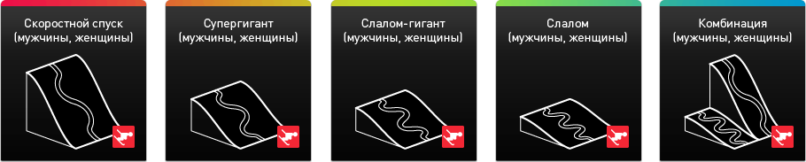
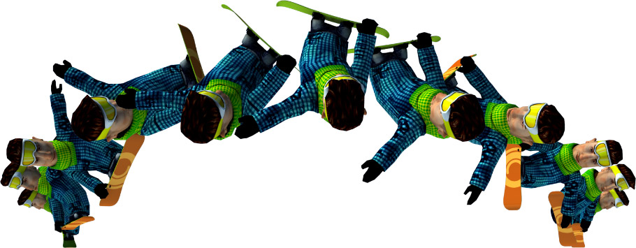
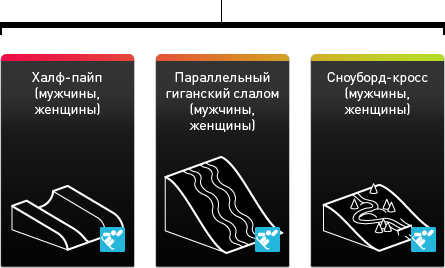
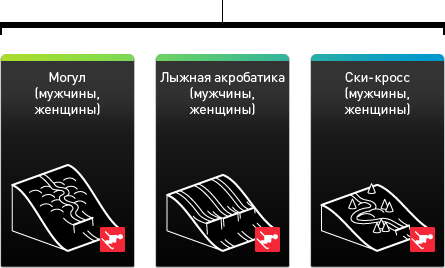

Горнолыжный центр  Наверх
Наверх
Горнолыжный центр «Роза Хутор» располагается на северном склоне хребта Аибга. Здесь будут построены 43 га спортивных трасс общей протяженностью 9 км, соответствующих требованиям Международной федерации горнолыжного спорта (FIS), расположенных на высотах от 940 м до 1945 м и иметь единую зону финиша.
Уникальность данного участка состоит в том, что здесь технически возможно строительство трасс для проведения всех 10 видов соревнований, внесенных FIS в список Олимпийских. Максимальная вместимость комплекса — 18 тыс. зрительских мест (8 000 сидячих мест и 10 000 стоячих).
Объект был сдан в эксплуатацию в конце 2010 года для проведения тестовых соревнований. В феврале 2011 года на территории горнолыжного центра «Роза Хутор» успешно прошли соревнования этапа Кубка Европы, а в феврале 2012 планируется проведение этапа Кубка мира по горнолыжному спорту.
Горнолыжные соревнования, включенные в программу Олимпийских игр

Сноуборд-парк и Фристайл-центр Наверх
Экстрим-Парк «Роза Хутор», который включает в себя сноуборд-парк и фристайл-центр, будет располагаться к западу от «Роза Плато» на высоте 1100–1200 м над уровнем моря. В сентябре 2008 года МОК одобрил перенос Фристайл-центра с горнолыжного курорта «Гранд Отель Поляна» на территорию плато «Роза Хутор» и объединение его со Сноуборд-парком с целью более компактного расположения олимпийских объектов, а также для создания максимально комфортных условий как для спортсменов-олимпийцев, так и для зрителей.
Максимальная вместимость Сноуборд-парка — 15 000 зрительских мест (5 000 сидячих мест и 10 000 стоячих). Максимальная вместимость Фристайл-центра — 14 000 зрительских мест (4 000 сидячих мест и 10 000 стоячих). Объекты планируется сдать в эксплуатацию в конце 2011 года для проведения тестовых соревнований.
Соревнования по фристайлу и сноуборду, включенные в программу Олимпийских игр
Сноуборд (6 видов) 
Фристайл (6 видов) 
|
— За всю историю зимних Олимпийских игр в моей дисциплине мы завоевали только две медали (серебро и бронзу), и я надеюсь, что с открытием трасс на горнолыжном курорте «Роза Хутор» мы добъемся тех успехов в горнолыжном спорте, которыми можем гордится многие годы.
Светлана Гладышева Президент Федерации горнолыжного спорта и сноуборда России |
Горная Олимпийская деревня Наверх
Горная Олимпийская деревня будет расположена на Плато «Роза Хутор» на высоте 1100 м над уровнем моря.
Вместимость Горной Олимпийской деревни составляет 2600 мест. Деревня занимает площадь 32 гектара в живописном месте с прекрасными панорамными видами на горы Аибга и Псехако.
Объект планируется сдать в эксплуатацию в 2013 году.
| Поделиться: |
|